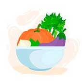
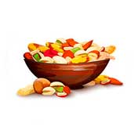
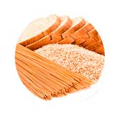

Ser Vegano
Elegir una alimentación vegana significa no comer ningún alimento de origen animal. Cuando las personas toman esta decisión, ya sea por cuestiones ideológicas, culturales o de salud, surgen algunas dudas respecto a qué tan recomendables pueden ser para la salud y si puede suceder que exista un déficit de nutrientes.
Como todo cambio, lleva un tiempo adaptarse a incorporar nuevos hábitos. Por eso, te recomiendo que, si decidiste ser vegano, empieces en forma gradual con los cambios, explorando, probando nuevos sabores y recetas para implementar.
De acuerdo a una encuesta desarrollada por la Unión Vegana Argentina (UVA), la población vegana y vegetariana creció de 9% a 12% en 2020 en Argentina. Según los datos, entre quienes no comen carne hay más mujeres (52%) que hombres (48%) y la mayoría tiene entre 35 y 49 años.
Asimismo, se ha comprobado que llevar una alimentación a base de plantas reduce el riesgo de sufrir algunas de las enfermedades más peligrosas, según indica incluso la Organización Mundial de la Salud (OMS).
Algunas cuestiones importantes, pero que no reemplazan tu consulta por ejemplo son: que podés combinar cereales con legumbres para formar una proteína completa, similar a la de las carnes. También podés utilizar semillas, lentejas y vegetales de hoja verde que son esenciales para obtener hierro. Siempre agrégales unas gotitas de limón o comer un cítrico para que ese hierro se absorba mejor.
Para obtener calcio, las almendras, semillas de sésamo machacadas y el brócoli son ideales. También podés beneficiarte con algunos productos fortificados.
Otro consejo que te puede resultar muy útil es aprender sobre fermentados y germinados.
Además, el profesional puede llegar indicarte tomar un poco de sol
en los horarios seguros para obtener vitamina D y suplementos de vitamina B 12.
3 razones por las cuales ser vegano
Si hay forma de vivir en la cual respetemos la vida animal, cuidemos nuestra salud y el planeta, ¿Por qué no elegirlas?
Por el planeta
La producción de carne y sus subproductos tiene un peso muy grande en nuestro planeta. Inmensas cantidades de agua y granos son requeridas para alimentar a los animales.
Por los animales
La crueldad animal en las industrias como la de productores de carne y sus subproductos, la cosmética y de la moda se encuentran en todas partes.
Por tu salud
Una dieta vegana balanceada puede incrementar tu nivel de energía, hacer que tu piel luzca más joven, mejorar tu digestión y reducir el riego de desarrollar cáncer colorrectal.
Alimentación vegana
El consumo elevado de productos de animales es una de las principales causas de las enfermedades cardiovasculares. Una alimentación vegetal reduce el riesgo de sufrir intoxicaciones alimentarias producidas por la salmonella, otras bacterias, y la exposición de toxinas medioambientales. Una dieta sin productos de origen animal, es extremadamente versátil. Los productos de origen animal se pueden sustituir fácilmente:

Las frutas y verduras son alimentos que constituyen una fuente importante de vitaminas, minerales, fitonutrientes y fibra.

Los frutos secos y semillas aportan grasas saludables y nutrientes con alto valor nutricional.

Los granos integrales y cereales aportan carbohidratos complejos, fibra y fitoquimicos.